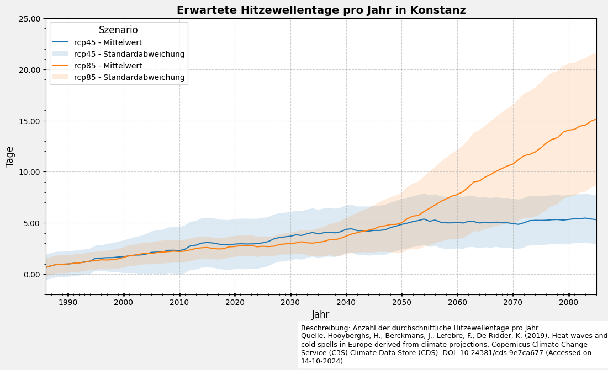

Hitzewellen-Tage anhand von Klimaprojektionen
Dieses Skript verarbeitet den Datensatz “Heat Wave Days” aus dem Copernics Climate Data Store. Der Datensatz enthält die Anzahl der Hitzewellen-Tage (Heat wave days; HWD), die mit verschiedenen europaweiten sowie nationalen/regionalen Definitionen im Rahmen des C3S European Health Service entwickelt wurden. Diese Tage sind für unterschiedliche zukünftige Zeiträume und Klimawandelszenarien verfügbar.
Informationen zum Datensatz:
Author: T. Tewes (Stadt Konstanz)
Notebook-Version: 1.4 (03.12.2024)
1. Specifying the paths and working directories
import os
''' ---- Hier die Verzeichnisse angeben ---- '''
download_folder = r".\data\sis-heat-and-cold-spells\download"
working_folder = r".\data\sis-heat-and-cold-spells\working"
geotiff_folder = r".\data\sis-heat-and-cold-spells\geotiff"
csv_folder = r".\data\sis-heat-and-cold-spells\csv"
output_folder = r".\data\sis-heat-and-cold-spells\output"
''' ----- Ende der Eingaben ---- '''
if not os.path.exists(download_folder):
os.makedirs(download_folder)
if not os.path.exists(working_folder):
os.makedirs(working_folder)
if not os.path.exists(geotiff_folder):
os.makedirs(geotiff_folder)
if not os.path.exists(csv_folder):
os.makedirs(csv_folder)
if not os.path.exists(output_folder):
os.makedirs(output_folder)
2. Download- und Upload-Daten
2.1 Authentication
import cdsapi
def main():
api_key = "fdae60fd-35d4-436f-825c-c63fedab94a4"
api_url = "https://cds.climate.copernicus.eu/api"
client = cdsapi.Client(url=api_url, key=api_key)
return client
if __name__ == "__main__":
main()
2024-12-11 17:24:09,568 INFO [2024-09-28T00:00:00] **Welcome to the New Climate Data Store (CDS)!** This new system is in its early days of full operations and still undergoing enhancements and fine tuning. Some disruptions are to be expected. Your
[feedback](https://jira.ecmwf.int/plugins/servlet/desk/portal/1/create/202) is key to improve the user experience on the new CDS for the benefit of everyone. Thank you.
2024-12-11 17:24:09,571 INFO [2024-09-26T00:00:00] Watch our [Forum](https://forum.ecmwf.int/) for Announcements, news and other discussed topics.
2024-12-11 17:24:09,572 INFO [2024-09-16T00:00:00] Remember that you need to have an ECMWF account to use the new CDS. **Your old CDS credentials will not work in new CDS!**
2024-12-11 17:24:09,572 WARNING [2024-06-16T00:00:00] CDS API syntax is changed and some keys or parameter names may have also changed. To avoid requests failing, please use the "Show API request code" tool on the dataset Download Form to check you are using the correct syntax for your API request.
2.2 Variable: Heat wave days
dataset = "sis-heat-and-cold-spells"
request = {
"variable": ["heat_wave_days"],
"definition": "climatological_related",
"experiment": [
"rcp4_5",
"rcp8_5"
],
"ensemble_statistic": [
"ensemble_members_average",
"ensemble_members_standard_deviation"
]
}
# # Uncomment und führen Sie diese Zelle aus, um den Datensatz herunterzuladen:
# def main_retrieve():
# dataset_filename = f"{dataset}_heat_wave_days.zip"
# dataset_filepath = os.path.join(download_folder, dataset_filename)
# # Download the dataset with the defined request parameters
# client.retrieve(dataset, request, dataset_filepath)
# if __name__ == "__main__":
# client = main()
# main_retrieve()
2.2 Entpacken der heruntergeladenenen Zip-Datei
import zipfile
# Erstellen Sie den Dateinamen und den Dateipfad für die ZIP-Datei des Datensatzes
dataset_filename = f"{dataset}_heat_wave_days.zip"
dataset_filepath = os.path.join(download_folder, dataset_filename)
# Öffnen Sie die Zip-Datei im Lesemodus und extrahieren Sie den Inhalt in den Arbeitsordner
with zipfile.ZipFile(dataset_filepath, 'r') as zip_ref:
zip_ref.extractall(working_folder)
print(f"ZIP-Datei wurde in das Verzeichnis {working_folder} entpackt")
ZIP-Datei wurde in das Verzeichnis .\data\sis-heat-and-cold-spells\working entpackt
3. Datenverarbeitung und Visualisierung
3.1 Erfassung der verfügbaren RCP-Szenarios und der Statistiken
import re
import pandas as pd
# Alle verfügbaren .nc-Dateien erfassen und Metadaten aus Dateiname ableiten
def meta(filename):
match = re.search(r'(rcp\d{2})_(\w+)_v(.*).nc', filename)
if not match:
raise ValueError("the given filename does not fit the expected naming scheme")
return dict(
filename = filename,
path = os.path.join(working_folder, filename),
rcp = match.group(1),
statistic = match.group(2),
version = match.group(3),
)
# Beispielverzeichnis (angepasst an deine Umgebung)
nc_files = [meta(f) for f in os.listdir(working_folder) if f.endswith('.nc')]
df_nc_files = pd.DataFrame.from_dict(nc_files)
df_nc_files
| filename | path | rcp | statistic | version | |
|---|---|---|---|---|---|
| 0 | HWD_EU_climate_rcp45_mean_v1.0.nc | .\data\sis-heat-and-cold-spells\working\HWD_EU... | rcp45 | mean | 1.0 |
| 1 | HWD_EU_climate_rcp45_stdev_v1.0.nc | .\data\sis-heat-and-cold-spells\working\HWD_EU... | rcp45 | stdev | 1.0 |
| 2 | HWD_EU_climate_rcp85_mean_v1.0.nc | .\data\sis-heat-and-cold-spells\working\HWD_EU... | rcp85 | mean | 1.0 |
| 3 | HWD_EU_climate_rcp85_stdev_v1.0.nc | .\data\sis-heat-and-cold-spells\working\HWD_EU... | rcp85 | stdev | 1.0 |
3.2 netCDF in GeoTIFF umwandeln
import rasterio
from rasterio.crs import CRS
from rasterio.transform import from_origin
import netCDF4 as nc
from netCDF4 import num2date
import numpy as np
import shutil
variable_name = 'HWD_EU_climate'
# Definiere das CRS (WGS84)
crs = CRS.from_epsg(4326)
# Schleife über alle Szenarien/Statistiken
for nc_file in nc_files:
rcp = nc_file['rcp']
statistic = nc_file['statistic']
print(f"Erstelle GeoTIFFs für {rcp}/{statistic}")
# NetCDF-Datei öffnen
ds = nc.Dataset(nc_file['path'])
lat = ds.variables['lat'][:]
lon = ds.variables['lon'][:]
time_var = ds.variables['time']
time_units = ds.variables['time'].units # Zeit-Einheiten ablesen
# Bestimme die Pixelgröße und den Ursprung
pixel_size_lat = (lat.max() - lat.min()) / (len(lat) - 1)
pixel_size_lon = (lon.max() - lon.min()) / (len(lon) - 1)
transform = from_origin(lon.min(), lat.max(), pixel_size_lon, pixel_size_lat)
# Arbeitsordner für unprozessierte GeoTIFFs erstellen
unprocessed_dir = os.path.join(working_folder, f'tiff-{rcp}-{statistic}')
os.makedirs(unprocessed_dir, exist_ok=True)
# Schleife über alle Zeitdaten
for t in range(len(time_var)):
# Jahr aus der Zeitvariable extrahieren
year = int(num2date(time_var[t], time_units).year)
# Speichern als unprozessierter GeoTIFF
geotiff_path = os.path.join(unprocessed_dir, f'{variable_name}_{rcp}_{statistic}_{year}.tiff')
processed_path = os.path.join(geotiff_folder, f'{variable_name}_{rcp}_{statistic}_{year}_processed.tiff')
# Überspringe, wenn die Dateien bereits existieren
if os.path.exists(geotiff_path) and os.path.exists(processed_path):
print(f"GeoTIFFs für {year} existieren bereits. Überspringe.")
continue
# Daten für den aktuellen Zeitstempel lesen
data = ds.variables[variable_name][t, :, :]
# Speichern als unprozessierter GeoTIFF, falls nicht existiert
if not os.path.exists(geotiff_path):
with rasterio.open(
geotiff_path,
'w',
driver='GTiff',
height=data.shape[0],
width=data.shape[1],
count=1,
dtype=data.dtype,
crs=crs,
transform=transform
) as dst:
dst.write(data, 1)
# Bild um 180° drehen und von links nach rechts spiegeln
rotated_data = np.rot90(data, k=2)
flipped_data = np.fliplr(rotated_data)
# Speichern des bearbeiteten GeoTIFFs, falls nicht existiert
if not os.path.exists(processed_path):
with rasterio.open(
processed_path,
'w',
driver='GTiff',
height=flipped_data.shape[0],
width=flipped_data.shape[1],
count=1,
dtype=flipped_data.dtype,
crs=crs,
transform=transform
) as dst:
dst.write(flipped_data, 1)
# Datei schließen
ds.close()
# Löschen des unprozessierten Ordners und seiner Inhalte
shutil.rmtree(unprocessed_dir)
Erstelle GeoTIFFs für rcp45/mean
Erstelle GeoTIFFs für rcp45/stdev
Erstelle GeoTIFFs für rcp85/mean
Erstelle GeoTIFFs für rcp85/stdev
3.3 netCDF in CSV umwandeln (Ausschnitt Deutschland)
import pandas as pd
from netCDF4 import Dataset, num2date
from tqdm import tqdm
# Definiere Ausschnitt; hier Deutschland
lat_min, lat_max = 47, 55
lon_min, lon_max = 5, 15
variable_name = 'HWD_EU_climate'
# Funktion zum Umwandeln von netCDF in CSV
def netcdf_to_dataframe(nc_file):
# Öffne die netCDF Datei
dataset = Dataset(nc_file['path'], 'r')
# Überprüfe, ob die Variable und 'time' in der Datei vorhanden sind
if variable_name in dataset.variables and 'time' in dataset.variables:
temperature = dataset.variables[variable_name][:]
time = dataset.variables['time'][:]
lat = dataset.variables['lat'][:]
lon = dataset.variables['lon'][:]
# Konvertiere die Zeit in ein lesbares Format
time_units = dataset.variables['time'].units
time_calendar = dataset.variables['time'].calendar if hasattr(dataset.variables['time'], 'calendar') else 'standard'
time = num2date(time, units=time_units, calendar=time_calendar)
# Finde die Indizes, die in den definierten Ausschnitt fallen (lat_min und lon_min werden vorausgesetzt)
lat_indices = (lat >= lat_min) & (lat <= lat_max)
lon_indices = (lon >= lon_min) & (lon <= lon_max)
# Filtere den Ausschnitt
filtered_lat = lat[lat_indices]
filtered_lon = lon[lon_indices]
filtered_temperature = temperature[:, lat_indices, :][:, :, lon_indices]
# Erstelle den Spaltennamen mit Variable, RCP und Statistik
variable_column_name = f"{variable_name}-{nc_file['rcp']}-{nc_file['statistic']}"
# Erstelle eine Liste von Einträgen für das DataFrame
rows = []
for t in range(filtered_temperature.shape[0]):
for i in range(filtered_temperature.shape[1]):
for j in range(filtered_temperature.shape[2]):
if not filtered_temperature.mask[t, i, j]:
rows.append({
'time': time[t],
'latitude': filtered_lat[i],
'longitude': filtered_lon[j],
variable_column_name: filtered_temperature[t, i, j]
})
# Erstelle ein DataFrame aus den Einträgen
df = pd.DataFrame(rows)
df['time'] = pd.to_datetime(df['time'].map(str))
df['latitude'] = pd.to_numeric(df['latitude'])
df['longitude'] = pd.to_numeric(df['longitude'])
df[variable_column_name] = pd.to_numeric(df[variable_column_name])
# Setze den Index auf time, latitude und longitude
return df.set_index(['time', 'latitude', 'longitude'])
else:
# Zugriff auf das nc_file Dictionary separat aufgelöst
path = nc_file['path']
raise ValueError(f"Variables not found in {path}")
# Schließe das Dataset
dataset.close()
# Durchlaufe Szenarien/Statistiken
dataframes = [netcdf_to_dataframe(nc_file) for nc_file in tqdm(nc_files)]
# Kombiniere alle Daten in eine Tabelle
df = pd.concat(dataframes, axis=1)
# Erstelle das Ausgabe-Verzeichnis, falls es nicht existiert
csv_path = os.path.join(csv_folder, 'sis-heat-and-cold-spells.csv.zip')
if not os.path.exists(csv_path):
# Schreibe CSV
df.to_csv(csv_path, sep=',', encoding='utf8', compression='zip')
print(f"Die Datei wurde erfolgreich erstellt: {csv_path}")
else:
# Überprüfe, ob die CSV-Datei bereits existiert
print(f"Die Datei {csv_path} existiert bereits. Überspringe Erstellung.")
# Zeige den DataFrame an
df
0%| | 0/4 [00:00<?, ?it/s]
25%|████████████████████████████████████████████████████████▌ | 1/4 [00:07<00:23, 7.68s/it]
50%|█████████████████████████████████████████████████████████████████████████████████████████████████████████████████ | 2/4 [00:15<00:15, 7.80s/it]
75%|█████████████████████████████████████████████████████████████████████████████████████████████████████████████████████████████████████████████████████████████████████████▌ | 3/4 [00:23<00:07, 7.98s/it]
---------------------------------------------------------------------------
KeyboardInterrupt Traceback (most recent call last)
Cell In[8], line 70
67 dataset.close()
69 # Durchlaufe Szenarien/Statistiken
---> 70 dataframes = [netcdf_to_dataframe(nc_file) for nc_file in tqdm(nc_files)]
72 # Kombiniere alle Daten in eine Tabelle
73 df = pd.concat(dataframes, axis=1)
Cell In[8], line 70, in <listcomp>(.0)
67 dataset.close()
69 # Durchlaufe Szenarien/Statistiken
---> 70 dataframes = [netcdf_to_dataframe(nc_file) for nc_file in tqdm(nc_files)]
72 # Kombiniere alle Daten in eine Tabelle
73 df = pd.concat(dataframes, axis=1)
Cell In[8], line 54, in netcdf_to_dataframe(nc_file)
52 # Erstelle ein DataFrame aus den Einträgen
53 df = pd.DataFrame(rows)
---> 54 df['time'] = pd.to_datetime(df['time'].map(str))
55 df['latitude'] = pd.to_numeric(df['latitude'])
56 df['longitude'] = pd.to_numeric(df['longitude'])
File F:\OneDrive - str.ucture GmbH\General\CoKLIMAx (Phase 2)\CoKLIMAx-II\myenv\lib\site-packages\pandas\core\series.py:4700, in Series.map(self, arg, na_action)
4620 def map(
4621 self,
4622 arg: Callable | Mapping | Series,
4623 na_action: Literal["ignore"] | None = None,
4624 ) -> Series:
4625 """
4626 Map values of Series according to an input mapping or function.
4627
(...)
4698 dtype: object
4699 """
-> 4700 new_values = self._map_values(arg, na_action=na_action)
4701 return self._constructor(new_values, index=self.index, copy=False).__finalize__(
4702 self, method="map"
4703 )
File F:\OneDrive - str.ucture GmbH\General\CoKLIMAx (Phase 2)\CoKLIMAx-II\myenv\lib\site-packages\pandas\core\base.py:921, in IndexOpsMixin._map_values(self, mapper, na_action, convert)
918 if isinstance(arr, ExtensionArray):
919 return arr.map(mapper, na_action=na_action)
--> 921 return algorithms.map_array(arr, mapper, na_action=na_action, convert=convert)
File F:\OneDrive - str.ucture GmbH\General\CoKLIMAx (Phase 2)\CoKLIMAx-II\myenv\lib\site-packages\pandas\core\algorithms.py:1743, in map_array(arr, mapper, na_action, convert)
1741 values = arr.astype(object, copy=False)
1742 if na_action is None:
-> 1743 return lib.map_infer(values, mapper, convert=convert)
1744 else:
1745 return lib.map_infer_mask(
1746 values, mapper, mask=isna(values).view(np.uint8), convert=convert
1747 )
File lib.pyx:2981, in pandas._libs.lib.map_infer()
File lib.pyx:2543, in pandas._libs.lib.maybe_convert_objects()
File F:\OneDrive - str.ucture GmbH\General\CoKLIMAx (Phase 2)\CoKLIMAx-II\myenv\lib\site-packages\numpy\core\numeric.py:322, in full(shape, fill_value, dtype, order, like)
274 @set_array_function_like_doc
275 @set_module('numpy')
276 def full(shape, fill_value, dtype=None, order='C', *, like=None):
277 """
278 Return a new array of given shape and type, filled with `fill_value`.
279
(...)
320
321 """
--> 322 if like is not None:
323 return _full_with_like(
324 like, shape, fill_value, dtype=dtype, order=order)
326 if dtype is None:
KeyboardInterrupt:
3.4 Filtern der Daten für Konstanz
# Filtern und Index für die gewünschte Position setzen
kn = (
df
.query('latitude == 47.7 and longitude == 9.200000000000003')
.reset_index()
.set_index('time')
)
# Transformation von Breit- zu Längsformat vorbereiten
kn_long = (
kn
.reset_index()
.melt(id_vars=['time', 'longitude', 'latitude'],
var_name='full_variable',
value_name='value'
)
.assign(
variable=lambda x: x.full_variable.str.split('-', expand=True)[0], # Extract 'variable' part
rcp=lambda x: x.full_variable.str.split('-', expand=True)[1], # Extract 'rcp' part
statistic=lambda x: x.full_variable.str.split('-', expand=True)[2] # Extract 'statistic' part
)
.drop(columns=['full_variable']) # Drop the temporary column
# Statistikspalten in separate Spalten umwandeln
.pivot_table(
index=['time', 'longitude', 'latitude', 'variable', 'rcp'],
columns='statistic',
values='value',
aggfunc='first'
)
.reset_index()
)
# Spalten umbenennen
kn_long.columns.name = None
kn_long = kn_long.rename(columns={'rcp': 'scenario', 'mean': 'mean', 'stdev': 'stdev'})
kn_long
| time | longitude | latitude | variable | scenario | mean | stdev | |
|---|---|---|---|---|---|---|---|
| 0 | 1986-01-01 | 9.2 | 47.7 | HWD_EU_climate | rcp45 | 0.664428 | 1.237293 |
| 1 | 1986-01-01 | 9.2 | 47.7 | HWD_EU_climate | rcp85 | 0.664428 | 0.864754 |
| 2 | 1987-01-01 | 9.2 | 47.7 | HWD_EU_climate | rcp45 | 0.820577 | 1.237293 |
| 3 | 1987-01-01 | 9.2 | 47.7 | HWD_EU_climate | rcp85 | 0.820577 | 0.864754 |
| 4 | 1988-01-01 | 9.2 | 47.7 | HWD_EU_climate | rcp45 | 0.956149 | 1.237293 |
| ... | ... | ... | ... | ... | ... | ... | ... |
| 195 | 2083-01-01 | 9.2 | 47.7 | HWD_EU_climate | rcp85 | 14.551274 | 6.499632 |
| 196 | 2084-01-01 | 9.2 | 47.7 | HWD_EU_climate | rcp45 | 5.383126 | 2.383281 |
| 197 | 2084-01-01 | 9.2 | 47.7 | HWD_EU_climate | rcp85 | 14.922153 | 6.499632 |
| 198 | 2085-01-01 | 9.2 | 47.7 | HWD_EU_climate | rcp45 | 5.325729 | 2.383281 |
| 199 | 2085-01-01 | 9.2 | 47.7 | HWD_EU_climate | rcp85 | 15.144990 | 6.499632 |
200 rows × 7 columns
3.5 Plotten der Daten (3.4 kn_long)
import matplotlib.pyplot as plt
from matplotlib.dates import YearLocator
import matplotlib.ticker as ticker
# plt.rcParams['font.family'] = 'Calibri'
# Erstelle die Figur und die Achsen
fig, ax = plt.subplots(figsize=(11, 6), facecolor='#f1f1f1', edgecolor='k')
# Plotten der Daten für jedes Szenario
for scenario in kn_long['scenario'].drop_duplicates():
# Daten für das aktuelle Szenario filtern
scenario_data = kn_long.query(f'scenario == "{scenario}"')
x = scenario_data['time']
y = scenario_data['mean']
err = scenario_data['stdev']
ax.plot(x, y, label=f'{scenario} - Mittelwert')
ax.fill_between(x, y - err, y + err, alpha=0.15, label=f'{scenario} - Standardabweichung')
# Titel und Achsenbeschriftungen hinzufügen
ax.set_xlabel("Jahr", fontsize=12)
ax.set_ylabel("Tage", fontsize=12)
ax.set_title('Erwartete Hitzewellentage pro Jahr in Konstanz', fontsize=14, fontweight='bold')
# Einschränkung der x-Achse auf den gewünschten Zeitraum
ax.set_xlim(pd.Timestamp('1986-01-01'), pd.Timestamp('2085-01-01'))
ax.xaxis.set_minor_locator(YearLocator())
ax.set_ylim(-2,25)
ax.yaxis.set_minor_locator(ticker.AutoMinorLocator())
ax.tick_params(axis='x', which='major', length=4, direction='inout', width=2)
ax.tick_params(axis='x', which='minor', length=3, direction='inout')
# Füge ein Gitternetz hinzu
ax.grid(visible=True, color='#b0b0b0', linestyle='--', linewidth=0.8, alpha=0.6)
ax.yaxis.set_major_formatter(ticker.FormatStrFormatter('%0.2f'))
# Legende mit Titel platzieren
ax.legend(loc="upper left", title='Szenario', title_fontsize=12, fontsize=10)
# Beschreibung und Quelle hinzufügen
plt.figtext(0.5, -0.05,
'Beschreibung: Anzahl der durchschnittliche Hitzewellentage pro Jahr.\n'
'Quelle: Hooyberghs, H., Berckmans, J., Lefebre, F., De Ridder, K. (2019): Heat waves and cold spells in Europe derived from climate projections. Copernicus Climate Change Service (C3S) Climate Data Store (CDS). DOI: 10.24381/cds.9e7ca677 (Accessed on 14-10-2024)',
ha='left', va='center', fontsize=9, wrap=True, backgroundcolor='w')
# Diagramm
plt.tight_layout()
plt.show()

3.6 Animiertes GIF erstellen: Jeden Zeitschritt in ein TIFF exportieren
import matplotlib as mpl
import matplotlib.pyplot as plt
import matplotlib.patheffects as path_effects
import netCDF4 as nc
import numpy as np
from datetime import datetime
from mpl_toolkits.basemap import Basemap
# Definiere netCDF-Dateipfad und Ausgabeverzeichnis global
nc_filename = "HWD_EU_climate_rcp45_mean_v1.0.nc"
nc_filepath = os.path.join(working_folder, nc_filename)
variable_name = 'HWD_EU_climate'
def create_map(lat, lon, data, title, output_path, cmap, vmin, vmax, plot_type='contourf'):
fig = plt.figure(figsize=(12, 10))
try:
# Erstelle eine Basemap für Deutschland
m = Basemap(projection='merc', llcrnrlat=47.3, urcrnrlat=55.0,
llcrnrlon=5.9, urcrnrlon=15.0, resolution='i')
# Hinzufügen von Flüssen, Küstenlinien und Ländergrenzen
m.drawrivers(color='blue', linewidth=0.3)
m.drawcoastlines(linewidth=0.7)
m.drawcountries(linewidth=0.7)
m.drawstates(linewidth=0.5)
m.drawmapboundary(fill_color='#DBE9F7') # Hintergrundfarbe
# Plot der Daten
lon, lat = np.meshgrid(lon, lat)
x, y = m(lon, lat)
data_masked = np.ma.masked_invalid(data)
cmap.set_bad(color=(0, 0, 0, 0)) # Setze ungültige Werte transparent
if plot_type == 'contourf':
m.contourf(x, y, data_masked, cmap=cmap, vmin=vmin, vmax=vmax)
elif plot_type == 'imshow':
m.imshow(data_masked, extent=[lon.min(), lon.max(), lat.min(), lat.max()],
origin='lower', aspect='auto', cmap=cmap, vmin=vmin, vmax=vmax)
# Koordinaten der deutschen Großstädte
cities = [
('Berlin', 52.520, 13.405, -20000, 20000),
('Hamburg', 53.551, 9.993, -20000, 20000),
('München', 48.135, 11.582, -20000, 20000),
('Stuttgart', 48.775, 9.182, -20000, 20000),
('Düsseldorf', 51.225, 6.776, -1000, 20000),
('Wiesbaden', 50.082, 8.241, -20000, 20000),
('Schwerin', 53.635, 11.412, -20000, 20000),
('Hannover', 52.374, 9.738, -20000, 20000),
('Saarbrücken', 49.234, 6.997, -20000, 20000),
('Dresden', 51.050, 13.737, -20000, 20000),
('Magdeburg', 52.120, 11.629, -50000, -40000),
('Kiel', 54.323, 10.139, -30000, -35000),
('Erfurt', 50.978, 11.029, -20000, 20000),
('Bremen', 53.075, 8.807, -20000, 20000),
('Potsdam', 52.390, 13.064, -50000, -30000),
('Mainz', 50.000, 8.271, -55000, -30000), ]
# Städte auf der Karte plotten
for city, lat_city, lon_city, x_offset, y_offset in cities:
x, y = m(lon_city, lat_city)
m.plot(x, y, 'ko', markersize=4) # Markerfarbe Schwarz und Größe erhöhen
txt = plt.text(x + x_offset, y + y_offset, city, fontsize=9, ha='left', color='black')
txt.set_path_effects([path_effects.withStroke(linewidth=1.5, foreground='white', alpha=0.5)])
# Füge einen Titel hinzu
plt.suptitle(title, fontsize=18)
plt.subplots_adjust(top=0.94)
# Colorbar anpassen
cbar_ax = plt.gcf().add_axes([0.80, 0.11, 0.04, 0.82])
cb = mpl.colorbar.ColorbarBase(cbar_ax, cmap=cmap, norm=mpl.colors.Normalize(vmin=vmin, vmax=vmax), orientation='vertical')
cb.set_label('Eignung (%)', size=12)
plt.savefig(output_path, bbox_inches='tight', pad_inches=0.1)
plt.close()
except Exception as e:
print(f"Fehler beim Erstellen des Plots für {title}: {e}")
def main():
os.makedirs(output_folder, exist_ok=True)
dataset = nc.Dataset(nc_filepath)
time_var = dataset.variables['time']
time_units = time_var.units
time_data = nc.num2date(time_var[:], units=time_units)
# Datenvariable
data_var = dataset.variables[variable_name][:]
# Finde den globalen Minimal- und Maximalwert der gesamten Datenvariable
global_min = np.nanmin(data_var)
global_max = np.nanmax(data_var)
print(f"Globaler Minimum-Wert: {global_min}")
print(f"Globaler Maximum-Wert: {global_max}")
# Verwende die benutzerdefinierte Colormap
cmap = mpl.colormaps['Reds']
#vmin, vmax = global_min, global_max
vmin, vmax = 0, 20
for year in range(1986, 2086):
desired_time = datetime(year, 1, 1, 0)
try:
time_index = np.where(time_data == desired_time)[0][0]
except IndexError:
print(f"Zeitpunkt {desired_time} nicht gefunden, überspringe Jahr {year}")
continue
print(year)
data = dataset.variables[variable_name][time_index, :, :]
lat = dataset.variables['lat'][:]
lon = dataset.variables['lon'][:]
if np.isnan(data).any() or np.isinf(data).any():
print(f"Ungültige Werte in den Daten für {desired_time}, überspringe Jahr {year}")
continue
data_min = np.min(data)
data_max = np.max(data)
if data_min == data_max:
print(f"Konstante Werte in den Daten für {desired_time}, überspringe Jahr {year}")
continue
create_map(lat, lon, data, f'Jahr {desired_time.year} - RCP8.5',
os.path.join(output_folder, f'{variable_name}_{year}.png'),
cmap, vmin, vmax, plot_type='contourf')
if __name__ == "__main__":
main()
---------------------------------------------------------------------------
ModuleNotFoundError Traceback (most recent call last)
Cell In[15], line 7
5 import numpy as np
6 from datetime import datetime
----> 7 from mpl_toolkits.basemap import Basemap
9 # Definiere netCDF-Dateipfad und Ausgabeverzeichnis global
10 nc_filename = "HWD_EU_climate_rcp45_mean_v1.0.nc"
ModuleNotFoundError: No module named 'mpl_toolkits.basemap'
3.7 Aus den TIFFs ein GIF erstellen
from PIL import Image
import imageio
# Name der Ausgabedatei
output_gif = f'{variable_name}_RCP85.gif'
gif_path = os.path.join(output_folder, output_gif)
# Liste der PNG-Bilder sortieren
images = []
for year in range(1986, 2086): # Anpassen, wenn Sie mehr Jahre haben
file_path = os.path.join(output_folder, f'{variable_name}_{year}.png')
if os.path.exists(file_path):
image = Image.open(file_path)
images.append(image)
# Erstellen des GIFs
images[0].save(gif_path, format='GIF', append_images=images[1:],
save_all=True, duration=400, loop=0)